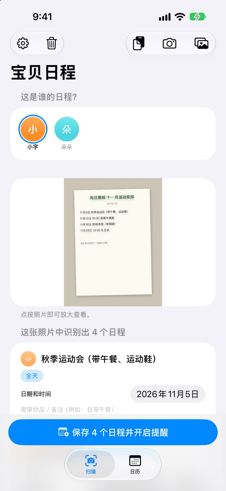
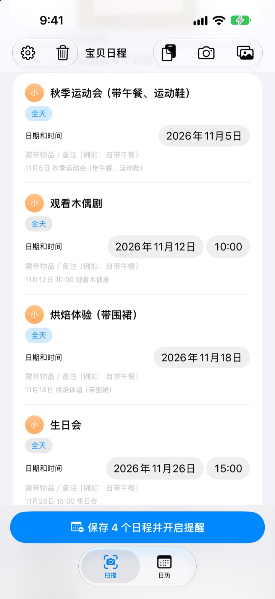
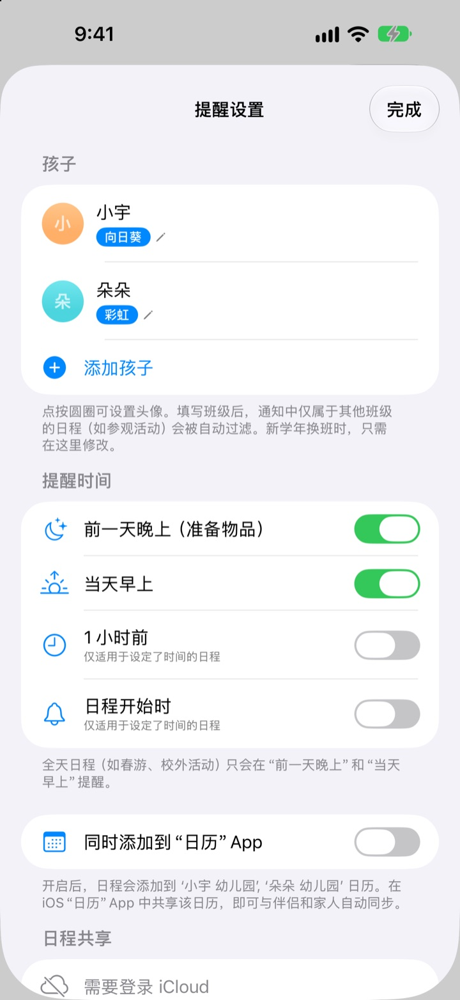
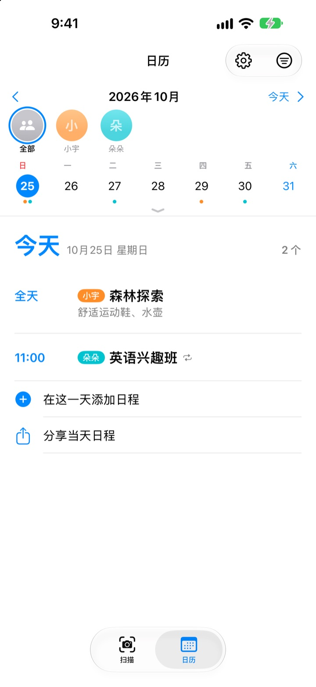

通知拍一下就好
要带的东西前晚提醒
把幼儿园发的月度日程表拍下来，宝贝日程会读出日期、时间和活动名称，一次性放进日历。春游前一晚 8 点，它会提醒你别忘了准备便当。
所有功能免费。照片不会离开你的手机。

拍一张通知试试
这是一份下个月活动通知的示例。拍下后，它会像 App 一样提取日程和要带的物品，并按你选的时间预约提醒。
还在把通知上的日程抄进日历吗？
一个月五六个活动，每次要带的东西都不一样：便当、运动服、围裙。贴在冰箱上的日程表，上班路上看不到，想起来往往已是当天早上。宝贝日程把那一张纸变成日历和提醒。
一张照片，一整个月
月历、家园通知、单张活动通知，不管什么样子，拍照或从相册选取，就能读出日期、时间和活动名称。也可以直接粘贴老师发来的消息，“明天”“这周五”这样的说法也会换算成具体日期。
保存前可以直接修改标题、日期和需带物品，不需要的日程左滑删掉即可。填好孩子的班级，其他班专属的活动会自动过滤掉。

要带的东西，前一晚提醒你
提醒时间可选前一天晚上 8 点、当天早上 7:30、1 小时前或准点。需带物品会显示在提醒里，书包不会再漏装。
打开“同时添加到‘日历’App”，日程会进入以孩子名字命名的专属日历，已经加过的日程不会重复添加。

几个孩子也好，全家一起也好
每个孩子用不同颜色区分，可以一起看，也可以单独看。它还会参考以往记录，猜出新通知是哪个孩子的。
发送邀请链接，伴侣、爷爷奶奶或阿姨都能查看和修改同一份日程。主屏幕小组件随时显示接下来的安排。

三步就能开始
- 1
添加孩子
填写名字和班级，头像照片想加再加。
- 2
拍下通知
正对着拍，让字迹清晰，识别会更准。
- 3
确认并保存
允许通知后，就会在你选的时间提醒带东西。
提醒什么时候来
- 前一天晚上 20:00
- 准备要带的东西，默认开启
- 当天早上 7:30
- 今日日程提醒，默认开启
- 1 小时前
- 仅限设定了时间的日程
- 日程开始时
- 仅限设定了时间的日程
春游、外出参观这类全天日程，只会收到前一晚和当天早上的提醒。可随时在设置中开关。
所有功能都免费
免费
- 从照片和消息中读取日程
- 保存前修改，过滤其他班级的日程
- 前一晚、当天早上、1 小时前和准点提醒
- 按孩子分色，合并日历
- 与“日历”App 同步
- 通过邀请链接和家人共享
- 主屏幕小组件
支持开发者
- 可以在设置中随心送上一点小费
- 小费不会解锁任何功能，不送也一样用
没有广告，也没有订阅。
常见问题
可以拍哪些照片？
月历（表格式）、文字形式的家园通知，以及单张活动通知或传单都可以。正对着拍、让字迹清晰，识别会更准确；也可以一次选多张照片批量扫描。
漏了几个日程，或者标题有错字。
手写或模糊的字可能较难识别。可以在提取出的列表里直接修改标题、日期和需带物品，不需要的日程左滑删除。漏掉的日程，请在“扫描”标签页用“手动添加日程”补上，再重新保存。
收不到提醒。
请在“设置”>“通知”>“宝贝日程”中确认已允许通知。在 App 的设置（⚙️）里还可以选择接收哪些时间的提醒。
其他班的活动也被加进来了。
请在设置中填写孩子的班级名称，通知里其他班专属的活动会被自动过滤。升班换了班级，只需改这里。
我有好几个孩子。
可以在设置中添加多个孩子并设置头像。扫描时选择是谁的日程，日历里就会按孩子分色显示，还能在合并视图和单个孩子之间切换。
想和伴侣一起看日程。
在设置的“日程共享”中点“邀请他人一起查看”，用信息发送邀请链接。对方也能查看和修改所有孩子的日程，任何一方修改都会立刻同步到双方。这与 Apple 的家人共享无关。
还有其他共享方式吗？
用“日历”标签页的共享按钮，可以发送宝贝日程文件、日历文件（.ics）或文字摘要。打开“同时添加到‘日历’App”后会生成以孩子名字命名的日历，在“日历”App 里把它通过 iCloud 共享，家人也能同步看到。
照片或日程会被发送到别处吗？
不会。照片里的文字全部在手机本机识别，数据也只存在手机上。只有在用“日程共享”邀请了别人时，日程才会经由你的 iCloud 共享给被邀请的人。
遇到问题或想要新功能，请发邮件至 leeo@kakao.com。我们通常会在 2 到 3 天内回复。附上设备型号和 iOS 版本会更有帮助。